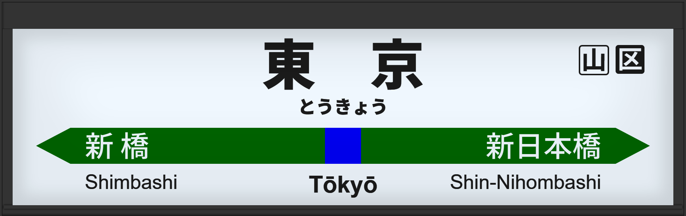

| ←新橋 | ■ 横須賀・総武線 | 新日本橋→ |
|---|
2000年10月に旧型ATOS放送を導入。
2006年6月には到着・終着放送が設定される。
2013年2月には常磐改良型に更新される。
2019年2月には宇都宮改良型に更新されました。
| 1 |
■ 横須賀線 久里浜方面 |
1番線次発予告 1番線接近放送 1番線到着放送 |
放送は「」です。 旧型でした。 |
|---|---|---|---|
| 2 |
■ 横須賀線 久里浜方面 ■ 総武快速線 千葉方面 |
2番線次発予告 2番線接近放送 2番線到着放送 |
放送は「」です。 旧型でした。 |
| 3 |
■ 総武快速線 千葉方面 |
3番線次発予告 3番線接近放送 3番線接近放送（折返し 臨時列車） 3番線到着放送 |
旧型でした。 |
| 4 |
■ 総武快速線 千葉方面 |
4番線次発予告 4番線接近放送 4番線到着放送 |
放送は「」です。 旧型でした。 |
| 1・2 | 中央線(快速) | |
|---|---|---|
| 3・6 | 京浜東北線 | |
| 4・5 | 山手線 | |
| 7~10 | 東海道線 | |
| 京葉地下1~4 | 京葉線 | |
| 総武地下1~4 | 横須賀・総武線 |